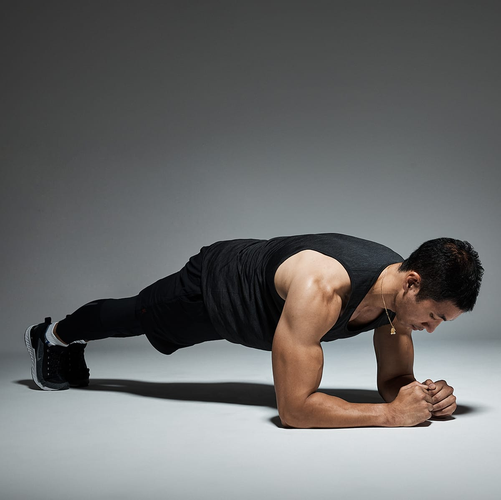
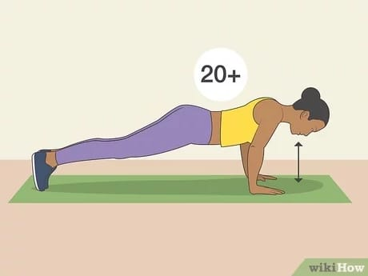

Types of Exercises
Pick one move from each of these categories. Then do 2 sets of 12 reps. Change up the moves but
repeat the plan
3 or 4
times a week. For cardio extra credit, see the add-ons below.
PUSh-Up
 Ultimate: Bench Press
Lie face-up on a bench, holding a heavy barbell at your sternum, hands shoulder-width apart, elbows bent into
sides.
Extend arms, pushing bar directly above chest. Pause, then lower barbell to start.
The Alternates: Push-up, dumbbell shoulder press, single-arm kettlebell press, push press
Ultimate: Bench Press
Lie face-up on a bench, holding a heavy barbell at your sternum, hands shoulder-width apart, elbows bent into
sides.
Extend arms, pushing bar directly above chest. Pause, then lower barbell to start.
The Alternates: Push-up, dumbbell shoulder press, single-arm kettlebell press, push press
PULL-Up
Ultimate: Pull-up
Hang from a bar with palms facing away from you, arms straight, knees bent so feet don't touch floor. Bend
elbows,
pulling chest toward bar. Slowly lower yourself to start.
The Alternates: Dumbbell row, TRX row, chin-up, cable row, lat pull-down
HIP-HINGE
 Ultimate: Deadlift Set a heavy barbell on the floor in front
of you. Push hips back as you bend forward, grabbing the bar with hands more than shoulder-width apart,
palms facing body. Keep back straight as you stand up, lifting the bar and thrusting hips forward. Slowly
lower bar to start. The Alternates: Kettlebell swing, Romanian deadlift, trap-bar deadlift
Ultimate: Deadlift Set a heavy barbell on the floor in front
of you. Push hips back as you bend forward, grabbing the bar with hands more than shoulder-width apart,
palms facing body. Keep back straight as you stand up, lifting the bar and thrusting hips forward. Slowly
lower bar to start. The Alternates: Kettlebell swing, Romanian deadlift, trap-bar deadlift
SQUAT
The Ultimate: Split Squat
Stand on your right leg, left foot resting on a bench or box behind you, and hold a heavy dumbbell in each hand.
Bend
right knee, lowering body until left knee hovers just above the ground. Straighten right leg, returning to
start.
Complete all the reps on one side before switching legs.
The Alternates: Barbell squat, lunge, goblet squat, reverse lunge
PLANK

Ultimate: Farmer's Walk Stand up straight holding a heavy dumbbell in each hand, palms facing
body. Maintain
your
posture as you walk 20 meters. Turn, repeat, returning to start.
The Alternates: Plank, bird dog, side plank, suitcase carry
Do More Reps

Load a barbell with a weight that's about 70 percent of what you can lift one time, then choose one
of the five
movements and perform as many reps as you can—without breaking form.
Sprint up a Hill
Set a treadmill to a slight incline, about 3 percent. Run as fast as you can for 30 seconds, aiming
for 10 miles
per
hour. Jog for 30 seconds at 5 mph. Repeat for 5 minutes.